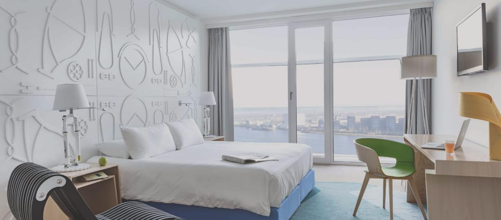

"The great advantage of a hotel is that it is a break from home life"
At TAJ PARADISE HOTEL, we offer all the essential facilities needed to make your stay both convenient and comfortable. We provide a large variety of services such as a fitness center to keep you toned and healthy, a swimming pool for you to cool off after a day of venturing Bangkok city, secretarial assistance from our staff upon request, a tourist information desk for recommendations of sights to see, room service for your luxury and comfort, a doctor on call in the event you feel unwell, in-room high-speed wireless connection to keep you plugged in, cable TV for late night entertainment, a babysitting service, laundry and dry cleaning services, concierge service to accommodate your stay, and a limousine and airport transfer service.
RECEPTION AREA
Reception. ... Our reception area is room where visitors are greeted and the receptionist sits. Reception can also refer to the quality of a broadcast signal, as received by a TV or radio. "Good reception means a clear, strong signal."
SWIMMING AREA
Dip into the cool blue pool to relax after a productive workout or a day of touring the city.
DINING AREA
Enjoy your fun meal with your friends and family. spend some quality time with your friends and family and make every moment unforgettable.
WAITING AREA
The place where you can wait and catch up with clients and other friends. we provide great service even in waiting room, where you will feel the taste of heaven.